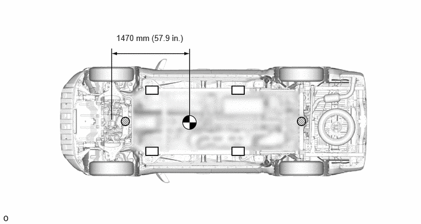
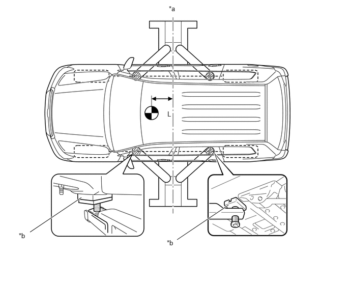

| Last Modified: 10-07-2025 | 6.11:8.1.0 | Doc ID: RM100000002HFUQ |
| Model Year Start: 2024 | Model: Tacoma | Prod Date Range: [12/2023 - ] |
| Title: INTRODUCTION: REPAIR INSTRUCTION: VEHICLE LIFT AND SUPPORT LOCATIONS; 2024 - 2026 MY Tacoma Tacoma HV [12/2023 - ] | ||
VEHICLE LIFT AND SUPPORT LOCATIONS
PRECAUTIONS ABOUT VEHICLE CONDITION WHEN RAISING VEHICLE
(a) The vehicle must be unloaded before jacking up or raising the vehicle. Never jack up or raise a heavily loaded vehicle.
(b) When removing any heavy components, like the engine, transmission or transaxle, the vehicle center of gravity will shift. To stabilize the vehicle, place a balance weight in a location that will prevent the vehicle from rolling or shifting, or place a transmission jack under the appropriate jack position at the opposite end of the vehicle.
PRECAUTIONS FOR WHEN USING A 4 POST LIFT
(a) Follow the safety procedures outlined in the lift's instruction manual.
(b) Do not damage the tires or wheels while driving onto the lift.
(c) Use wheel chocks to secure the vehicle.
PRECAUTIONS FOR WHEN USING JACK AND SAFETY STANDS
(a) Work on a level surface. Use wheel chocks at all times.
(b) Set the jack and safety stands exactly under the specified locations on the vehicle.
Never set the jack or safety stands under suspension parts, such as a front lower arm, when jacking up the vehicle.
(c) When jacking up the vehicle, first release the parking brake and move the shift lever to N. (w/o Electronic Shift Lever System)
(d) When jacking up the vehicle, first release the parking brake, then move the shift lever to N and confirm that neutral (N) has been selected. (w/ Electronic Shift Lever System)
(e) Do not work on or leave the vehicle supported only by a jack. Be sure to support the vehicle with safety stands.
(f) When jacking up the entire vehicle:
(1) When jacking up the front wheels first, make sure wheel chocks are behind the rear wheels.
(2) When jacking up the rear wheels first, make sure wheel chocks are in front of the front wheels.
(g) When jacking up only the front or rear wheels of the vehicle:
(1) Before jacking up the front wheels, place wheel chocks on both sides of the rear wheels.
(2) Before jacking up the rear wheels, place wheel chocks on both sides of the front wheels.
(h) When lowering a vehicle that only has its front or rear wheels jacked up.
|
JACK POSITION |
SUPPORT POSITION - Safety stand - Swing arm type lift |
||
|
VEHICLE CENTER OF GRAVITY (Unloaded Condition) |
- |
- |
(1) Before lowering the front wheels, make sure wheel chocks are in front of the rear wheels.
(2) Before lowering the rear wheels, make sure wheel chocks are behind the front wheels.
PRECAUTIONS FOR WHEN USING A SWING ARM TYPE LIFT
(a) Follow the safety procedures outlined in the lift's instruction manual.
(b) Use swing arms equipped with rubber attachments as shown in the illustration.
(c) Position the vehicle so that its center of gravity is centered on the lift (length of "L" in the illustration should be as short as possible).
(d) Ensure that the rubber cushions or swing arms do not contact the body cladding or lower mouldings.
(e) Be sure to lock the swing arms before raising the vehicle (if equipped with arm locks).
(f) Use the lift to raise the vehicle until the tires are off the ground, then stop the lift and shake the front and rear of the vehicle to make sure that it is stable.
|
*a |
Center of lift |
*b |
Rubber Attachment |
|
VEHICLE CENTER OF GRAVITY (Unloaded Condition) |
- |
- |
HINT:
- The illustration is a representative example. The actual center of gravity may differ depending on the vehicle.
- The shape of the support position varies depending on the vehicle model. Therefore, make sure to confirm the shape.